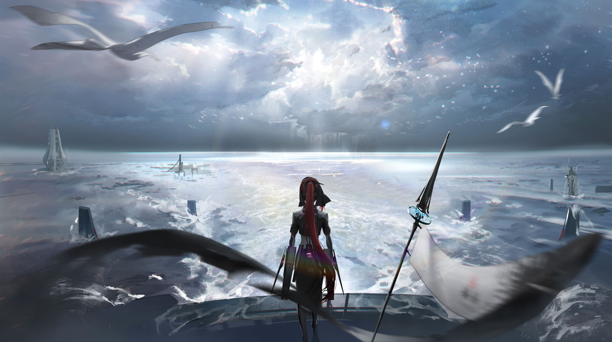
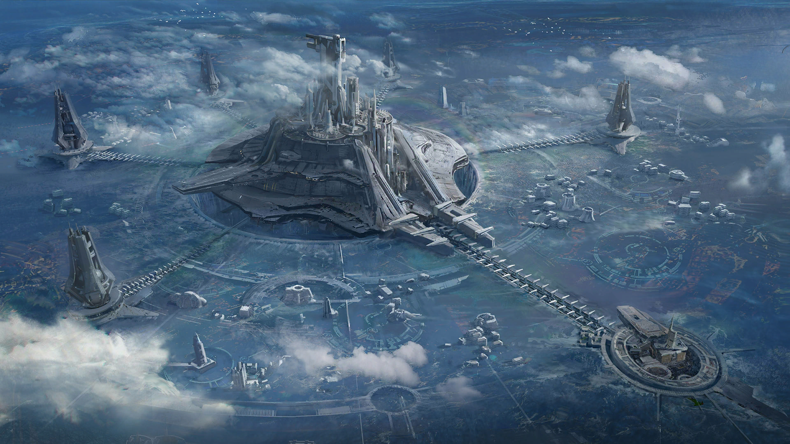
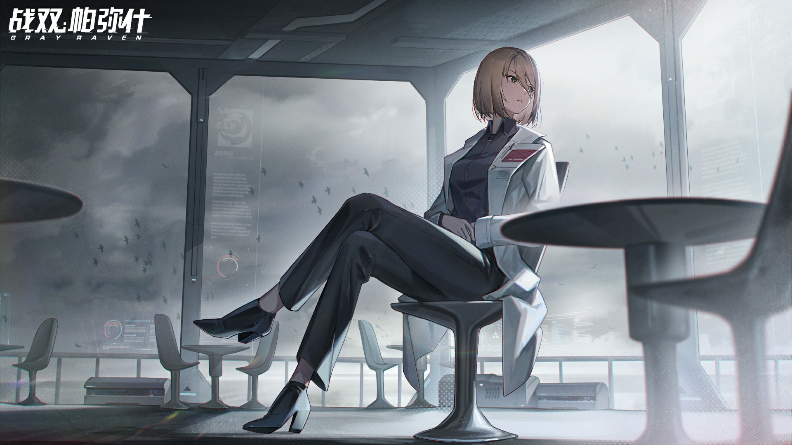

The Last Spark is the chapter where the story's opening question — what it means to be human when machines rise — finally gets its answer. Below is what stays with me after the credits roll, and the last CGs from the run.



What stays with me
- The final choice is never about winning — it is about which memory to keep when the world has to be rebuilt.
- The combat system itself feels like the story's thesis: calculate between survival and surrender.
- I entered the game to rest the mind; I left with the feeling that someone I played with has become, in the story, part of the name of what follows.
The journey maps
The chapter cases mirror the earlier sectors but the arc itself burns through them: from the barrier to the shore, and the shore to the sea. This is the line that the title quotes — the last spark before the dark, kept because it holds.
I rate the pacing high: the first half of the chapter is exposition, the second half is all decision, and the final cutscene is short enough that you cannot look away for it.
Sources
Plot details mirror the official Punishing: Gray Raven WIKI (战双帕弥什). The story itself is script and subtitles from the game files.